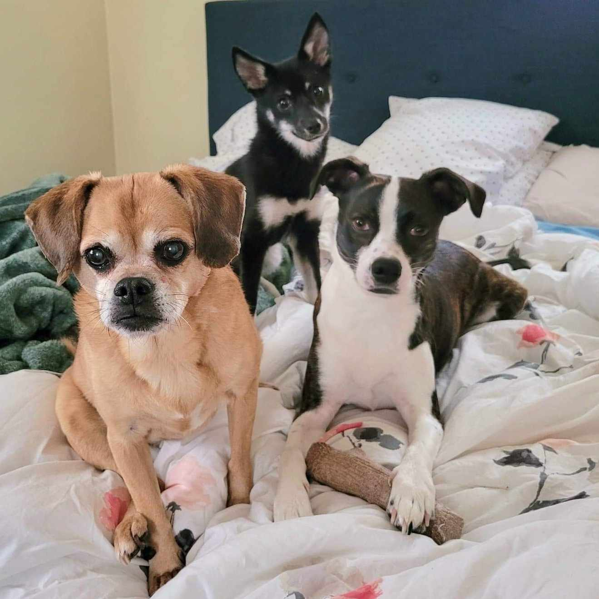

Welcome to Wagging Ways of Life
Welcome to Wagging Ways of Life, a blog dedicated to showcasing the daily lives and adventures of my three adorable dogs. Join us as we explore the world through their Wagging tails and capture precious moments in pictures. This blog is a window into the joy and love that dogs bring to our lives. Stay tuned for regular updates and be prepared to be charmed by their wagging ways!
Written by: Jason Li
For more information please email: jli-97@uri.edu